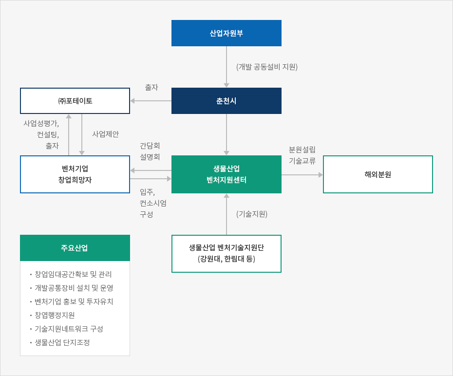
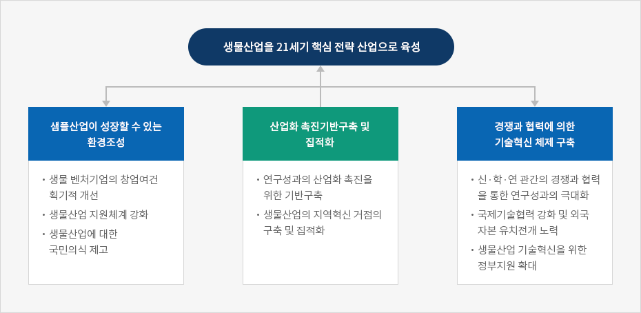
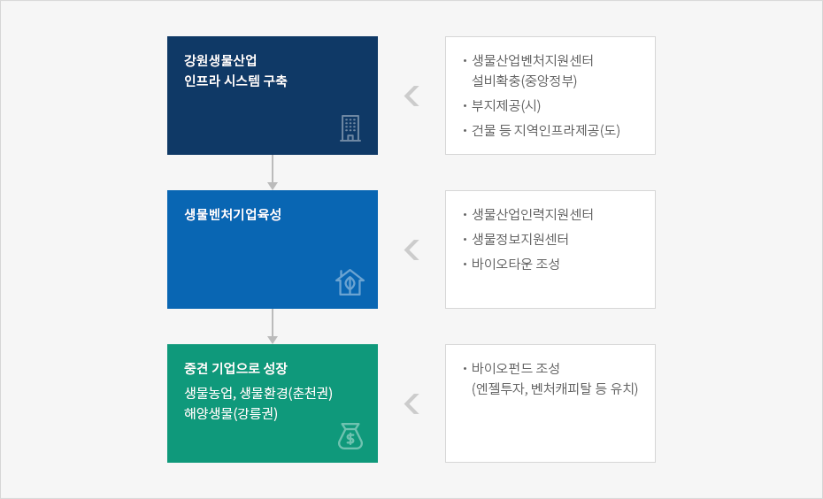

생물산업
- Home
- 주요산업
- 생물산업
생물산업의 특성
생물산업 (bioindustry, biotechnology industry) 은 동물 · 식물 · 미생물 등 생물체가 가지고 있는 기능과 정보를 활용하고, 생물촉매인 효소를 이용하여 인류가 필요로 하는 각종 유용물질을 상업적으로 산하는 산업군을 말함.
생물산업은 유전자 재조합, 세포융합, 단백질공학, 세포배양, 생물공정 등과 같은 생물공학 기술을 이용하여 생산되는 제품과 제조과정상의 공정으로 크게 나눌 수 있음.
생물공학기술은 생물체의 기능을 이용해 제품을 만들거나 유전적 구조를 변형시켜 고유의 특성을 활용하는 복합기술을 의미하며, 이러한 생물공학기술을 이용하는 과정에서 신규제품의 창출과 기존 제품의 개량이 가능함.
주요 생물공학기술의 개요
기초기술
| 세부기술명 | 내용 |
|---|---|
| 유전자재조합기술 | 분자수준에서 유전자를 조작하는 기술로서 생명현상의 본체인 유전자를 생체외부 시험관에서 변환시킨 뒤, 변환된 유전자를 운반체를 통하여 다시 생체 내에 주입하고 발현시켜 유용물질을 만들어 내는 기술 |
| 세포융합 기술 | 서로 다른 형질을 가진 두 개 이상의 세포를 융합시켜 세포 하나에 각 세포의 유용한 특성을 모두 지닌 세포를 만들어 내는 기술 |
| 단백질공학 기술 | 아미노산 서열을 지닌 단백질의 분자구조를 변경시켜 특수 목적의 단백질을 개발하는 기술로서 주로 단백질의 안정성 및 효능 증대 분야에서 이용 |
실용화 기술
| 세부기술명 | 내용 |
|---|---|
| 발효기술 | 역사가 가장 오래된 생물산업으로서 일정한 온도와 습도를 이용하여 발효조 내에서 미생물을 배양시키는 기술 |
| 세포배양 기술 |
|
| 생물공정 기술 | 생물체 시스템을 이용하여 유용물질을 생산하는 공정기술로 생물반응 공학기술과 분리정제기술까지 포함 |
| 생물 엔지니어링 | 생물공학기술을 실용화하고 산업화하는 복합 시스템공학으로 생물학적 방법을 이용한 공장의 설계 및 건설 등 |
국내 생물산업 현황
1998년 생물산업의 내수는 5,085억원으로 1992년 이후 연평균 31.9%의 높은 증가율을 나타내고 있음.
1998년 국내 생물산업 생산은 8,200억원으로 지난 5년간 연평균 50% 이상의 높은 증가율을 나타내고 있음.
1998년 국내 생물산업 생산은 8,200억원으로 지난 5년간 연평균 50% 이상의 높은 증가율을 나타내고 있음.
국내 생물산업의 수급현황
(단위 : 백만원)
| 구분 | 1992 | 1995 | 1996 | 1998 |
|---|---|---|---|---|
| 내수 | 96,543 | 251,611 | 328,462 | 508,500 |
| 수출 | 24,635 | 73,534 | 244,853 | 452,300 |
| 생산 | 82,749 | 238,786 | 468,145 | 819,800 |
| 수입 | 38,429 | 86,359 | 105,170 | 141,000 |
※ 자료 : 한국생물산업협회, [연도별 국내 생물산업 실태조사] 각 년호
향후 생물산업의 내수는 관련산업의 확대와 기업들의 적극적인 투자에 힘입어 1997 ~ 2005년 동안 연평균 34.5% 로 증가할 것으로 전망되고 있으며, 2006 ~ 2010년 동안에도 연평균 21.7% 의 높은 증가율을 보일 전망임.
이러한 생물산업 관련 시장규모의 증대와 함께 국내시장규모는 2010 년에 세계시장의 5% 이상을 차지할 것으로 전망되고 있음.
수출은 2005년에 28억 달러, 2010년에 79억 달러로, 1997 ~ 2005년 동안 33.8%, 2006 ~ 2010년 동안 22.6% 의 연평균 증가율을 나타낼 것으로 전망됨.
수입은 39.9%, 2006 ~ 2010 년 동안에는 연평균 21.0%로 증가할 것으로 전망됨
수입은 39.9%, 2006 ~ 2010 년 동안에는 연평균 21.0%로 증가할 것으로 전망됨
국내 생물산업의 수급전망
(단위 : 억원, 백만달러)
| 구분 | 1997 | 1998 | 2000 | 2003 | 2005 | 2010 |
|---|---|---|---|---|---|---|
| 내수 | 4,246 | 5,085 | 11,000 | 25,000 | 45,400 | 121,200 |
| 수출 | 278 | 300 | 700 | 1,600 | 2,860 | 7,920 |
| 생산 | 5,879 | 8,198 | 14,000 | 32,000 | 56,200 | 155,600 |
| 수입 | 120 | 168 | 400 | 900 | 1,760 | 4,560 |
연평균 증가율
(단위 : %)
| 구분 | 1997 ~ 2005 | 2006 ~ 2010 |
|---|---|---|
| 내수 | 34.5 | 21.7 |
| 수출 | 33.8 | 22.6 |
| 생산 | 32.6 | 22.6 |
| 수입 | 39.9 | 21.0 |
※ 자료 : 산업연구원, [ 생물의약산업의 발전전략 ], 1999
※ 주 : 수출, 수입은 달러기준
※ 주 : 수출, 수입은 달러기준
1998년 생물산업 국내시장 규모는 5,085 억원으로, 분야로는 생물의약부문이 56.4% 로 가장 크고, 생물공정 12.5%, 생물화학 9.2%, 생물농업 8.5%, 생물식품 7.2%, 생물환경 6.2% 의 비중을 차지하고 있음.
한편 수출은 생물화학부문이 라이신 등 아미노산계의 수출 증가에 힘입어 46.7% 의 높은 비중을 나타내고 있으며, 다음으로 생물의약 (38.6%), 생물식품 (11.9%) 등으로 나타남. 향후 국내 생물산업시장은 세계시장 추이와 유사하게 생물의약을 중심으로 높은 성장세를 유지할 것으로 전망되고 있음.
생물의약시장은 1999 ~ 2010 년 동안 연평균 25.1% 의 증가율을 나타낼 것으로 전망되어, 국내 생물산업에서 차지하는 비중이 56.4%(1998 년) 에서 50.0%(2010 년) 로 낮아질 것으로 전망되고 있음.
생물산업 부문별 내수 및 수출 현황 (1998)
(단위 : 백만원, %)
| 구분 | 내수 | 수출 |
|---|---|---|
| 생물의약 | 286,626 (56.4) | 185,962 (38.6) |
| 생물농업 | 43,300 (8.5) | 11,064 (2.3) |
| 생물식품 | 36,535 (7.2) | 57,197 (11.9) |
| 생물환경 | 31,783 (6.2) | 50 (0.0) |
| 생물화학 | 46,863 (9.2) | 224,847 (46.7) |
| 생물공정 | 63,404 (12.5) | 2,374 (0.5) |
| 합계 | 508,511 (100.0) | 481,494 (100.0) |
※ 자료 : 한국생물산업협회
생물농업 및 생물식품 분야가 생물산업에서 차지하는 비중은 1998 년 각각 8.5%, 7.2% 에서 2010 년에는 각각 9.8%, 9.3% 로 높아질 전망임. 이에 따라 두 부문이 국내 생물산업에서 19.1% 의 비중을 차지할 정도로 높은 성장세를 보일 전망임.
부문별 생물산업의 국내시장 전망
(단위 : 억원, %)
| 구분 | 1998 | 2000 | 2003 | 2005 | 2010 | 연평균 증가율 (1999~2010) |
|---|---|---|---|---|---|---|
| 생물의약 | 2,866 (56.4) |
6,050 | 13,750 | 22,700 | 60,600 (50.0) |
25.1 |
| 생물농업 | 433 (8.5) |
946 | 2,150 | 4,449 | 11,878 (9.8) |
25.8 |
| 생물식품 | 365 (7.1) |
891 | 2,025 | 4,222 | 11,272 (9.3) |
26.3 |
| 생물화학 | 469 (9.2) |
1,111 | 2,525 | 5,085 | 13,574 (11.2) |
22.8 |
| 생물환경 | 318 (6.2) |
715 | 1,625 | 3,269 | 8,726 (7.2) |
29.1 |
| 생물공정 | 634 (12.5) |
1,287 | 2,925 | 5,675 | 15,150 (12.5) |
24.5 |
| 계 | 5,085 (100.0) |
11,000 | 25,000 | 45,400 | 121,200 (100.0) |
25.3 |
※ 자료 : 한국생물산업협회
생물농업 및 생물식품 분야가 생물산업에서 차지하는 비중은 1998 년 각각 8.5%, 7.2% 에서 2010 년에는 각각 9.8%, 9.3% 로 높아질 전망임. 이에 따라 두 부문이 국내 생물산업에서 19.1% 의 비중을 차지할 정도로 높은 성장세를 보일 전망임.
강원권의 생물산업 육성현황
춘천을 비롯한 강원도는 일부 공단지정 지역을 제외한 대부분이 상수원 보호구역 등으로 지정되어 있으며, 지리적 여건상 공장부지도 협소하기 때문에 제조업이 입지하기에는 타 지역에 비해 불리한 여건임. 따라서 춘천시는 입주 가능한 업종으로 우선적으로 무공해 산업이면서 R&D 비중이 높은 생물산업을 지역개발차원에서 유치하였음
춘천 생물산업 벤처기업 지원센터 운영
춘천은 특히 지난 1999 년 하반기 준공된 “ 생물산업벤처기업지원센터 ” 를 통해 생물산업 육성을 위한 인프라를 구축하고 있음.
생물산업 분야 중에서 농업생명공학, 환경생물, 의용공학, 실버생명공학 등을 중점 연구대상분야로 지정하고, 지역특성에 맞는 업종 및 창업아이템 발굴 지원, 벤처기업 자생력 기반 구축 등을 추진하고 있음.
생물농업 및 생물식품 분야가 생물산업에서 차지하는 비중은 1998 년 각각 8.5%, 7.2% 에서 2010 년에는 각각 9.8%, 9.3% 로 높아질 전망임. 이에 따라 두 부문이 국내 생물산업에서 19.1% 의 비중을 차지할 정도로 높은 성장세를 보일 전망임.
춘천 생물산업 벤처기업 지원센터 현황
| 구분 | 내용 |
|---|---|
| 규모 |
|
| 주요시설 |
|
| 주요기능 |
|
| 입주대상업체 |
|
※ 자료 : 춘천시
춘천시는 미래산업으로 멀티미디어 · 영상산업, 생물산업 등을 선정하여 시장 직할로 “ 지식문화산업국 ” 을 설치하고, 지역여건에 맞는 산업을 육성하기 위한 체제를 구축하여 운영하고 있음.
강원도 춘천시의 생물산업 추진 체계



중앙정보의 생물산업 육성방안
생물산업 관련 정부부처별 투자규모를 살펴보면 1999 년에 과학기술부 994 억원, 농림부 280 억원, 산업자원부 217 억원 등 총 1,608 억원이 지원되었으며, 이중 R&D 부문이 1,450 억원, 인프라 등 설비지원부문이 158 억원임.
산업자원부는 기반시설이 부족한 국내 실정을 감안하여 벤처지원센터, 안전성평가센터 등 인프라 부문을 확충할 계획임.
생물산업관련 부처별 투자규모 (1999)
(단위 : 억원)
| 과기부 | 교육부 | 농림부 | 산자부 | 복지부 | 환경부 | 해양부 | 계 | |
|---|---|---|---|---|---|---|---|---|
| R&D | 772 | 186 | 268 | 133 | 28 | 28 | 35 | 1,450 |
| 인프라 | 22 | - | 12 | 84 | 19 | 18 | 3 | 158 |
| 계 | 794 | 186 | 280 | 217 | 47 | 46 | 38 | 1,608 |
2000년 2월 산업자원부는 생물산업을 국가주력산업으로 육성하기 위해 “ 생물산업발전 종합대책 ” 을 마련하고 세부적인 실행계획을 수립하고 있음.
산업자원부는 정보통신기술 (IT) 과 융합된 바이오기술 (BT) 이 향후 21 세기의 핵심기술로 자리할 것으로 전망하고 생물산업기반 구축에 대한 투자를 확대할 예정임.
추진 과제로서
① 생물산업이 성장할 수 있는 환경조성,
② 산업화 촉진 기반의 구축 및 집적화,
③ 경쟁과 협력에 의한 기술혁신체계 확립 등을 설정하고 관련 법안 마련 등 부문별 세부사업계획을 수립중임.
① 생물산업이 성장할 수 있는 환경조성,
② 산업화 촉진 기반의 구축 및 집적화,
③ 경쟁과 협력에 의한 기술혁신체계 확립 등을 설정하고 관련 법안 마련 등 부문별 세부사업계획을 수립중임.
특히 생물산업 육성 시범사례로서 춘천 생물산업벤처지원센터에 대한 지원방안이 포함되어 있어, 도 차원에서 추가적인 지원방안을 수립할 경우 생물농업 및 생물환경 부문에서 강원도를 대표할 수 있는 산업으로 성장할 가능성이 매우 높음.
생물산업 성장환경 조성
생물벤처기업 창업여건 조성
- 정부, 창투사, 생물산업계가 지원하는 생물산업 전문투자조합의 설립을 통하여 생물산업지원 전문펀드를 조성하고, 이외에도 민간주도의 생물산업 전문투자조합 결성을 유도함.
- 생물벤처기업을 전문적으로 심사하는 평가인력의 확대 및 생물벤처 창업설명회, 창업지원부스 설치 및 세제지원에 관한 제도개선 등으로 생물벤처 창업열기의 확산을 도모함.
생물산업 지원체제 강화
- 생물산업 발전을 제도적으로 지원하기 위한 지원체제 확립을 위해 " 생물산업 발전기반 조성에 관한 법률 (가칭)" 제정을 추진함.
- 생물산업 발전지원을 위해 산업기반기술개발사업에 “ 생물산업기술개발 ” 의 별도항목을 신설함.
- 과학기술부 (기초연구개발), 산업자원부 (실용화 응용기술, 인프라구축) 및 농림부, 보건복지부, 교육부, 해양수산부, 환경부 등과 범정부 차원의 효율적 지원체제 구축함.
생물산업에 대한 국민 이해의 제고
- “Bioindustry Award” 를 제정하고 국내 생물산업계, 연구소, 지원기관 등 생물기술 연구개발 및 산업현장에 대한 홍보사업을 실시함.
- 생물산업 전시회 개최, 사이버 교육프로그램을 개발하고 정부와 민간의 유기적 협조체제 구축을 위한 바이오사회 민간추진협의회를 결성함.
산업화 촉진 기반의 구축 및 집적화
연구성과의 산업화 촉진을 위한 기반구축
- 화학연구소 안정성센터의 시설확충 사업을 차질 없이 추진하고, 현재 진행중인 인천 송도테크노파크의 생물산업기술 실용화센터 설립을 차질 없이 추진함.
- 산 · 학 · 연 연구인력 네트워크를 구축 · 활용하여 전문인력 활용을 극대화하고, 유전체연구소, 프로티오믹스연구소 등을 설립하여 유전자해석이나 생물정보 처리능력을 확보하는 등 Post Genome 시대를 대비함.
생물산업 지역혁신거점 구축 및 집적화
- 지역 내 대학, 연구소, 업계, 지자체간의 유기적 협력을 통해 지역별로 적합한 생물산업을 집중 육성함.
- 지역별로 설립된 생물산업 혁신거점의 네트워크화 및 기술정보 교류, 공동연구 등 협력사업을 추진함.
경쟁과 협력에 의한 기술혁신체제 확립
[산 · 학 · 연 · 관]의 경쟁과 협력을 통한 연구성과의 극대화
- 기존 생물산업체와 중소 · 벤처기업간 협력 활성화 도모 및 생물산업체, 대학, 연구소가 보유하고 있는 생물연구설비 등에 대한 네트워크시스템을 구축함.
- 관련부처간 사전협의를 통해 중복성 및 개발주체간 연계가능성을 검토하여 기술개발 지원성과를 극대화함.
국제기술협력 활성화 및 외국자본 유치노력 전개
- 미국 · 일본 등 생물산업 선진국과 국제협력사업을 확대하여 기술협력을 활성화하고 외국자본 투자유치 외국자본 투자유치 기회로 활용함.
- 국내개발이 어려운 기술은 해외연구기관과의 과감한 공동연구를 유도하여 기술적 국수주의를 탈피하고, 생물산업관련 국제협약에 효과적으로 대응함.
생물산업 기술혁신을 위한 정부지원 확대
- 정부 R&D 예산 중 생물산업에 대한 지원비중을 매년 1% 씩 증가시켜 1999년 5.4% 에서 2005 년 10% 이상으로 확대함.
- 기술개발분야를 단기 · 중기거점, 차세대로 구분하여 추진하는 “ 생물산업기술개발 5 개년계획 (2001~2005)” 을 수립함.
생물산업발전을 위한 추진전략

생물산업을 21세기 핵심 전략 산업으로 육성
-
샘플산업이 성정할 수 있는 환경조성
- 생물 벤처기업의 창업여건 획기적 개성
- 생물산업 지원체계 강화
- 생물산업에 대한 국민의식 제고
-
산업화 촉진기반구축 및 집적화
- 연구성과의 산업화 촉진을 위한 기반구축
- 생물산업의 지역혁신 거점의 구축 및 집적화
-
경쟁과 협력에 의한 기술혁신 체제 구축
- 신·학·연 관간의 경쟁과 협력을 통한 연구성과의 극대화
- 국제기술협력 강화 및 외국자본 유치전개 노력
- 생물산업 기술혁신을 위한 정부지원 확대

※ 자료 : 산업자원부
또한 지방자치단체들도 생물산업관련 육성계획이 수립 · 추진중이며, 지방자치단체별로 독자적인 차별화 전략을 마련하고 있음
생물산업 육성을 위한 필요기능
산·학 연구협력
- 생물산업은 특정 기술력의 보유가 경쟁력의 원천이 되고 있으며, 대학의 연구개발능력과 기업의 사업화 기능을 연계할 수 있는 연구협력기능이 필요함.
- 특히 생물산업기반이 취약한 지역의 경우 대학 교수 등 전문인력에 대한 연구개발 지원사업과 관련 기업의 사업화기술을 연계시켜 지원하는 시스템 구축을 통해 지역 내 생물산업의 활성화를 도모함.
고급인력 양성 및 재교육
생물산업이 지속적인 연구역량을 갖추기 위해서는 고급연구인력 확보와 재교육시스템이 필수적임.평가인증기관 설립
- 국내 생물산업 관련 제품의 미국 등 해외선진국 시장을 진출하기 위해서는 안전성 인증기관의 운영이 긴요함.
- 특히, 강원지역의 경우 생물농업 및 생물환경 등 특화부문에 대한 평가인증기관의 설립을 추진할 필요성이 있음.
생물산업단지 조성
- 이미 춘천시에서 추진하고 있는 생물산업벤처지원센터에서 양성된 업체가 지역 내 생물산업단지로 이전하여 생산, 제조할 수 있는 지리적 공간을 제공함.
- 강원 생물산업단지는 생물벤처기업이 제조업으로 성장할 수 있는 여건을 조성하여, 강원생물산업의 확산을 통해 지역경제활성화를 도모함.
생물벤처기업의 창업활성화 지원
실험실 창업, 분리창업 등 대학 및 기업에서 생물벤처업체를 양성할 수 있는 창업보육기능과 생물산업관련 일괄 행정서비스체제 구축강원 생물산업 육성전략
강원지역 생물산업 육성전략은 이미 운영중인 춘천 생물산업벤처지원센터에 생물산업 종합지원기능을 갖추어 인력지원, 정보지원 등 종합적인 지원시스템을 확충하고, 바이오타운 (단지조성) 등을 추가 조성함.
생물산업벤처지원센터를 이수한 기업이 아파트형 공장 등 중소규모 생산설비를 갖추어 제조능력을 갖추도록 하고, 향후 생물산업단지로 규모를 확대하여 생물산업을 강원도의 주력산업으로 육성함.
춘천시가 국내 최초로 생물산업벤처지원센터를 설립한 이후, 대전, 인천 등 각 광역자치단체별로 생물산업에 대한 지원방안을 강구하고 있음.
따라서 강원도 차원에서 생물산업을 춘천권역으로 확대하고, 향후 강원전지역에 대한 시너지효과를 높이기 위해서 춘천시와 행정지원협조 시스템을 구축할 필요가 있음.
이미 지난 1999 년 강원지역 산업진흥계획상에서 나타난 바와 같이 생물산업집적화단지 (바이오타운) 구축, 인력지원 방안, 지원센터 내 설비확충 등 시와 도간의 긴밀한 행정시스템을 상호 보완적으로 운용함.
장기적으로 춘천시의 행정지원시스템을 벤치마킹함으로써 새로운 산업 유치 및 발전을 위한 인근 시 · 군 등 지방자치단체간에 효율적인 행정네크워크 구축함.

-
강원생물산업 인프라 시스템 구축
- 생물산업벤처지원센터 설비확충(중앙정부)
- 부지제공(시)
- 건물 등 지역인프라제공(도)
-
생물벤처기업육성
- 생물산업인력지원센터
- 생물정보지원센터
- 바이오타운 조성
-
중견기업으로성장-생물농업,생물환경(춘천권),해양생물(강릉권)
- 바이오펀드 조성(엔젤투자,벤처캐피탈 등 유치)